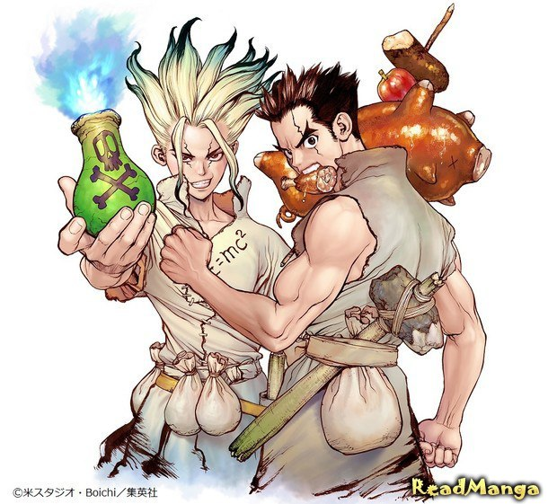

|  |
Описание:Однажды, когда Тайджу пытался собраться с духом, чтобы признаться девушке в любви, небо заполнил странный свет. Все люди, на которых он падал, превращались в камень. После без малого четырёх тысяч лет он наконец выбирается из каменного плена и начинает исследовать окрестности. Неожиданно Тайджу встречается его старый друг Сенку, очнувшийся полгода назад. Сенку приводит Тайджу в свой примитивный дом на дереве и просит помощи в возрождении исчезнувшей человеческой цивилизации, начиная с попыток выяснить истинную природу света, который превратил людей в камень. |
|